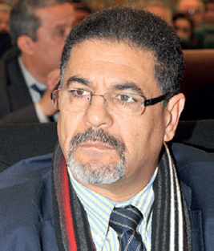
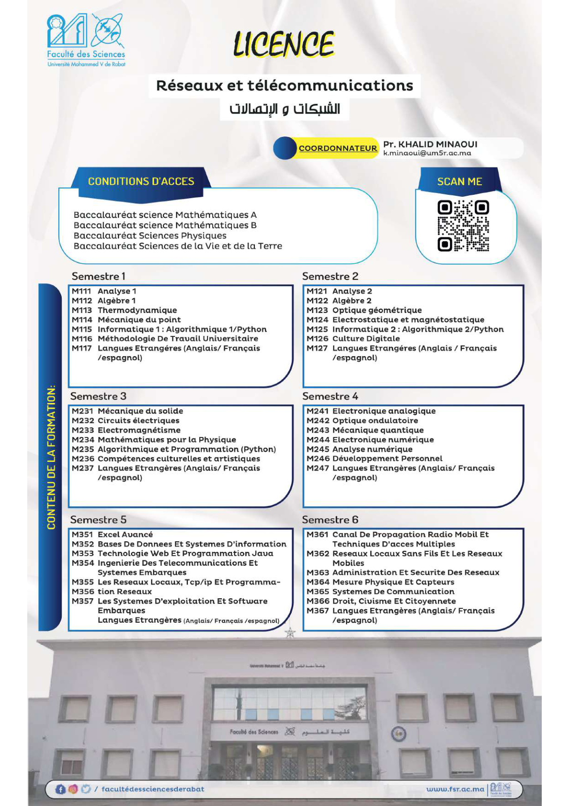

Manifestations · 21–23 mai 2026
ISIVC 2026
13th International Symposium on Signal, Image, Video and Communications — ISIVC
Découvrir ↗De l’intelligence artificielle aux télécommunications, une communauté scientifique qui relie les idées, les disciplines et les générations.
Retour sur les conférences et rencontres de notre communauté scientifique.
13th International Symposium on Signal, Image, Video and Communications — ISIVC
Découvrir ↗
Intelligence artificielle pour la santé : innovations et enjeux
Découvrir ↗
Multimodal Face Presentation Attack Detection: Challenges & Advances
Découvrir ↗Une autre manière de découvrir le laboratoire, ses chercheurs et son engagement pour la formation et la recherche.
À la Faculté des Sciences de Rabat, le LRIT développe une recherche à la croisée de l’informatique, du traitement de l’information et des télécommunications.
Issu du groupe Signaux, Communications et Multimédia créé en 1993, le laboratoire articule recherche scientifique, formation doctorale et coopération. Ses travaux s’étendent des contenus numériques aux réseaux et aux systèmes embarqués.
Six portes d’entrée pour découvrir les thématiques du laboratoire, du fondamental aux applications.
Enseignants-chercheurs, membres associés et doctorants font vivre le laboratoire et ses collaborations.
Consulter l’annuaire ↗ DIRECTEUR ACTUEL
DIRECTEUR ACTUELTraitement du signal, enseignement et formation doctorale.
Réseaux de communication, capteurs sans fil et analyse des images.

EN MÉMOIREUn héritage scientifique et humain au cœur du LRIT.
La formation par la recherche : un lien vivant entre les étudiants, les enseignants et les équipes du laboratoire.
Site du Master IT ↗Une formation spécialisée en STIC, associant enseignements fondamentaux, compétences avancées et initiation à la recherche.
Programme & accès · Site du Master ↗Un parcours associant informatique, réseaux et télécommunications, des fondamentaux aux applications.
Consulter la plaquette ↗Des travaux encadrés au sein des équipes, des collaborations scientifiques et des possibilités de cotutelle.
 Télécharger l’affiche du Master ↓
Télécharger l’affiche du Master ↓
Télécharger l’affiche de la Licence ↓Un premier accès aux travaux, aux échanges et à la mémoire scientifique du laboratoire.
Les références du rapport : articles, communications scientifiques et contributions à des ouvrages.
Parcourir les publications →VIE SCIENTIFIQUEConférences, séminaires et activités de l’Association des Jeunes Chercheurs en Informatique et Télécommunications.
Découvrir les échanges →Retrouvez le LRIT à la Faculté des Sciences de Rabat, Université Mohammed V.
Faculté des Sciences de Rabat
Université Mohammed V de Rabat
Rabat, Maroc
Pr Khalid Minaoui